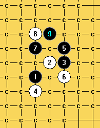

一个结论 一个问题
首页
茗弈阁
#1 一个结论 一个问题 作者：自来水 发表时间：2009-5-23 20:26:19
 溪月弱四的一个三打.rar
溪月弱四的一个三打.rar
本来帮茗弈小刀讨论的是这个图有几个必胜
=======上图对应的爱五子棋谱代码如下，以便你拆解：========
h8i9j9h7
======================================================结果小刀也只给出常见的两个必胜，看着老书上给某个点的五手两打标上“C”
=======上图对应的爱五子棋谱代码如下，以便你拆解：========
h8i9j9h7j10
======================================================我奋然拆起这个五（没办法，没人给我谱啊）
结果纠结于这个图
=======上图对应的爱五子棋谱代码如下，以便你拆解：========
h8i9j9h7j10j8h10h11
======================================================借鉴不少网友的方法，总是因为空间不够而告终，，好在把这个5弄成这样
=======上图对应的爱五子棋谱代码如下，以便你拆解：========
h8h9i10j10g8
======================================================
=======上图对应的爱五子棋谱代码如下，以便你拆解：========
h8h9i10j10g8i8g10f10f8
======================================================也算没白忙，这个五必胜了。。。拿出来分享一下
顺便问下
=======上图对应的爱五子棋谱代码如下，以便你拆解：========
h8i9j9h7j10
======================================================这个5和我地毯的那个在盘端上有什么差异，如何解决？
［ 失落刀 于 2009-5-23 20:27:58 时奖励此帖[金币加 20 威望加1］
［ 茗弈小刀 于 2009-5-23 21:11:26 时花20金币送鲜花一朵］
#2 Re:一个结论 一个问题 作者：屏蔽 发表时间：2009-5-23 20:32:55
I6/J8必胜么？K8应该也是黑优？
话说你自己做的地毯你不知道有什么差异么…… - -
#3 Re:一个结论 一个问题 作者：自来水 发表时间：2009-5-23 20:43:18
I6 J8肯定是必胜( 站中有谱) K8我听说而已
LS,我拆这个五
=======上图对应的爱五子棋谱代码如下，以便你拆解：========
h8i9j9h7j10
======================================================我只知道盘端问题出在这两个6上,后面是否我自己走错我就不得而知了
=======上图对应的爱五子棋谱代码如下，以便你拆解：========
h8i9j9h7j10i10
======================================================
=======上图对应的爱五子棋谱代码如下，以便你拆解：========
h8i9j9h7j10j8
======================================================到后来遇到比较多的问题,于是放弃了
然后,就希望能否有谁把这个棋形再转回去,解决盘端问题.
#4 Re:一个结论 一个问题 作者：自来水 发表时间：2009-5-23 21:15:40
 有鲜花,有奖励,,,,为什么没人回答我问题……
有鲜花,有奖励,,,,为什么没人回答我问题……
#5 Re:一个结论 一个问题 作者：江南新绿 发表时间：2009-5-23 21:16:29
真没有看到有什么盘端问题。把问题图发出来啊
#6 Re:一个结论 一个问题 作者：茗弈小刀 发表时间：2009-5-23 21:16:44
“本来帮茗弈小刀讨论的是这个图有几个必胜”应该是
本来和茗弈小刀讨论的是这个图有几个必胜。
你这个5也很好，下了番功夫。很佩服这种精神，值得我学习。
#7 Re:一个结论 一个问题 作者：自来水 发表时间：2009-5-23 21:23:13
小到……恶，不好意思，“帮”通“和”（地方语言）
新绿老师：
=======上图对应的爱五子棋谱代码如下，以便你拆解：========
h8i9j9h7j10j8h10h11j11k10j12j13i11g9h12g13k13l14k12i12k14
======================================================这个图的9手本来是没问题的，转过来就不成立了。
我个人觉得问题就出在9上，或许有两条岔路
=======上图对应的爱五子棋谱代码如下，以便你拆解：========
h8i9j9h7j10j8h10h11i11
======================================================
=======上图对应的爱五子棋谱代码如下，以便你拆解：========
h8i9j9h7j10j8h10h11i10
======================================================但我确实没拆出来……
#8 Re:一个结论 一个问题 作者：茗弈小刀 发表时间：2009-5-23 21:24:56
“这个5和我地毯的那个在盘端上有什么差异，”你地毯那个5在1旁边条线，这个5在1旁边的旁边，所以盘端不同。
#9 Re:一个结论 一个问题 作者：江南新绿 发表时间：2009-5-23 21:25:24
=======上图对应的爱五子棋谱代码如下，以便你拆解：========
h8i9j9h7j10j8h10h11i11
======================================================我以前走是这路
#10 Re:一个结论 一个问题 作者：江南新绿 发表时间：2009-5-23 21:27:45
=======上图对应的爱五子棋谱代码如下，以便你拆解：========
h8i9j9h7j10j8h10h11i11j12k9l8f10g10g9e11f9f11d9g11d11h9i8
======================================================
#11 Re:一个结论 一个问题 作者：岳麓小棋后 发表时间：2009-5-23 21:32:29
=======上图对应的爱五子棋谱代码如下，以便你拆解：========
h8h7h10i9j9h11j10j8i11
======================================================话说不是通瑞恒这个吗，这个必胜
#12 Re:一个结论 一个问题 作者：自来水 发表时间：2009-5-23 21:33:37
=======上图对应的爱五子棋谱代码如下，以便你拆解：========
h8i9j9h7j10j8h10h11i11j12
======================================================白10唯一,以下我似乎总不得要领……这也是我放弃的原因
#13 Re:一个结论 一个问题 作者：岳麓小棋后 发表时间：2009-5-23 21:34:48
。。。。。。。。
=======上图对应的爱五子棋谱代码如下，以便你拆解：========
h8i9j9h7j10j8h10h11i11j12k9l8f10k8g10i10i8
======================================================最强防新绿LS表演了，这个是次强的
#14 Re:一个结论 一个问题 作者：自来水 发表时间：2009-5-23 21:39:41
恒星的话一般都选这个7了
=======上图对应的爱五子棋谱代码如下，以便你拆解：========
h8i9h10h7j9h11j8
======================================================,我之前在Ls那将杀未杀里面问,结果LS不给反映……害得我混乱到现在。。
#15 Re:一个结论 一个问题 作者：自来水 发表时间：2009-5-23 21:49:39

确实，我就差几步………能力问题啊
#16 Re:一个结论 一个问题 作者：岳麓小棋后 发表时间：2009-5-23 21:50:18
嘿嘿，主要是我有自己要拆的东西，你的东西一下掺合进来，一时和我要拆的东西不一样，所以呢，一时没那么多闲心，再说了这个论坛很多高手嘛